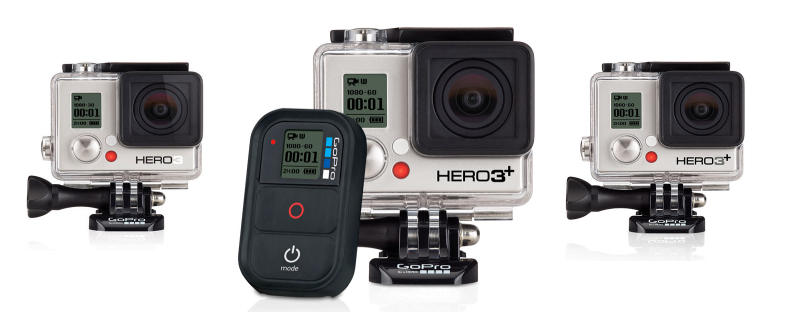
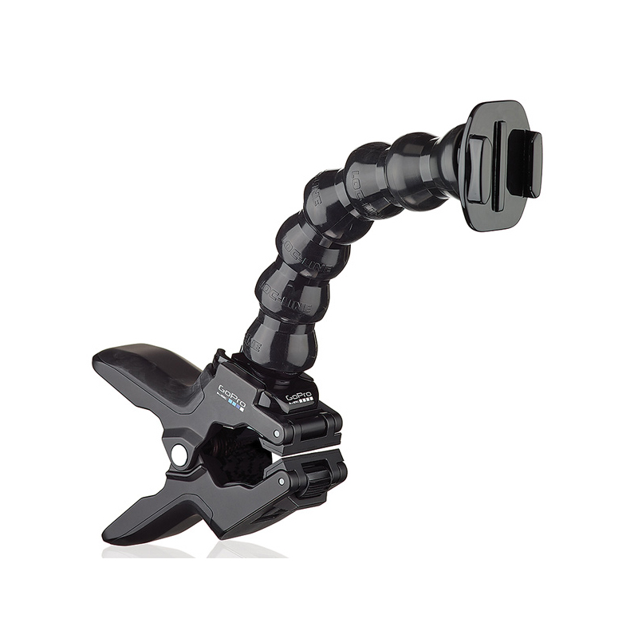
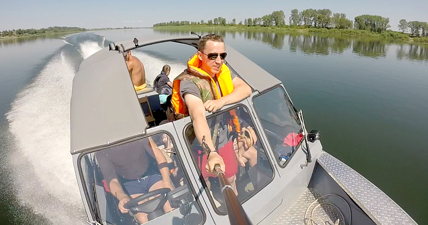

Action-камеру GoPro я хотел купить довольно давно. Ещё первое поколение камеры было в моём вишлисте, потому вышли GoPro Silver, а теперь уже GoPro Black. Четыре года назад я даже сбился с курса и купил камеру Kodak PlaySport. Но форм-фактор камеры в виде сотового телефона не показался мне удобным, да и у камеры не было нужной в экшн-съёмке широкоугольности, поэтому, пролежав в шкафу все эти годы, она была с удовольствием подарена хорошим людям.
GoPro сегодня, конечно же, стандарт.
Вы наверняка выдели захватывающие дух видео, снятые этой камерой. У этих видео есть один забавный эффект. Когда их просматриваешь, чувствуешь себя прожигающим свою никчемную жизнь ничтожеством, но ведь мы с тобой не такие. Поэтому камеру я всё-таки решил купить.
Сегодня на рынке представлены три варианта этой камеры:

White Edition — всё реже можно встретить на прилавках, делает 5-мегапиксельные фотки, видео в разрешении 1080p снимает с частотой 30 кадров в секунду. Может делать серии фотографий 3 кадра в секунду. При разрешении 720p может записывать 60 кадров в секунду. Не поддерживает нативный пульт управления.
Silver Edition — снимает фотки с разрешением в 10 мегапикселей, видео в разрешении 1080p снимает с частотой 60 кадров в секунду. Серии фотографий 10 кадров в секунду. При разрешении 720p — 120 кадров в секунду. Поддерживает пульт, но не имеет его в комплекте поставки.
Black Edition — топовая модель. Фотки в 12 мегапикселей, видео такое же как и в Silver Edition, 1080p 60fps, 720p 120 fps. Серии фотографий 30 кадров в секунду. Имеет сверхширокоугольный режим superview, вроде как может снимать при худшем освещении. Максимальное разрешение видео — 4k. В комплекте есть пульт управления.
Долгое время я выбирал между Silver и Black Edition. С одной стороны хотелось иметь последнюю модель, с другой стороны модели почти ничем не отличаются, зато Black Edition стоит в Кемерове примерно на 4 тысячи дороже. Silver — 12800, Black — 17000 рублей.
Прагматичность одержала верх над снобизмом. В итоге в «Терминале» была заказана и в тот же день выкуплена за 12790 рублей Silver Edition. Карта памяти на 32 гигабайта обошлась еще в тысячу с небольшим рублей. На следующий день на -1 этаже «Лапландии» был куплен монопод за 2700. Там вообще было несколько моноподов, начиная от 1000 рублей, но самый хороший всегда самый дорогой. Кстати, там продаются и сами камеры, дешевле чем купил я, и кажется, дешевле, чем где бы то ни было в Кемерове (рублей на 300-500).
Камеру я использую уже около двух недель, поэтому можно написать о выводах и наблюдениях.

Крепления. В комплекте поставки есть несколько креплений, и, если вы планируете крепить камеру к шлему или сноуборду, вы сможете сделать это сразу. Остальные крепления придётся покупать, причём оригинальные аксессуары стоят достаточно дорого. Я пока остановился на моноподе. Слишком активным спортом я не занимаюсь, а монопод даёт определённую свободу действий и возможность менять ракурс. В комплекте поставки, кроме креплений, есть бокс с двумя сменными крышками. Одна крышка обеспечивает герметичность при съёмках в воде, вторая — имеет прорези. С такой крышкой бокс не будет герметичным, но звук, записываемый камерой, будет лучше.

WiFi. Все камеры GoPro имеют поддержку WiFi, но работает он не совсем так, как кажется до покупки. Камеру нельзя подключить по WiFi к компьютеру и сливать таким образом фоточки. WiFi может использоваться только для удалённого управления. Камера не подключается к вашей локальной сети, а сама становится точкой доступа. Чтобы слить фотки, придётся каждый раз доставать камеру из бокса и подключать её проводом.
Пульт. Нативный (родной) пульт управления идёт в комплекте с GoPro Black Edition, моя камера его поддерживает, но его нужно будет купить отдельно. Стоит около 5000 рублей. Таким образом, если вам нужен пульт, лучше покупать сразу Black Edition. Пульт может заменить приложение для сотового телефона (есть для iPhone, Android, Windows Phone). Но нужно понимать, что телефоном будет сложно пользоваться в определённых ситуациях (вода, мороз, грязь). К тому же батарея телефона явно разрядиться быстрее обычного. На телефоне, в отличие от пульта, можно в «живом» режиме просматривать то, что «видит» ваша камера. И пульт и приложение используют WiFi. Это значит батарея камеры сядет быстрее.
Частота кадров. Если с разрешением видео в век недорогих больших телевизоров всё более-менее ясно, то для чего нужна частота кадров понимают не все. Вроде как больше лучше, но дальше что непонятно. Принятым в мире стандартом съёмки является частота в 24 кадра в секунду. В роликах, снятых с бОльшим разрешением, таким образом, нет никакого смысла, если бы не один момент. Видео, снятое камерами Silver и Black Edition, с частотой 120 кадров в секунду, при обработке, можно замедлить в 120/24 = 5 раз, без потери качества в виде дёрганий. Таким образом, если вы не собираетесь «замедлять» видео, можно смело оставлять 30 кадров в секунду и не тратить ресурсы компьютера при обработке и место на карте. Кстати при частоте 30 кадров в секунду на 32-гигабайтную карту помещается 4 часа 22 минуты видео с разрешением 1080p.
На выходе камера выдаёт MP4-файлы с видео, закодированным кодеком H.264. Кодек, уверен, имеет множество достоинств, но есть и один недостаток. Это лицензируемый кодек, и даже бесплатное приложение GoPro Studio, не поддерживает его (за встраивание кодека в ПО нужно покупать лицензию). Для работы с видео нужно будет перекодировать его в другой. Это легко делается в самом приложении, но вам необходимо будет запастись местом на вашем винчестере. 6 гигабайт видео для первого моего ролика после перекодирования превратились в 60. С моим винчестером в 250 гигабайт мне пришлось удалить пару сериалов.
Снимать и монтировать видео, для меня, занятие новое и интересное.
Первое видео получилось таким.